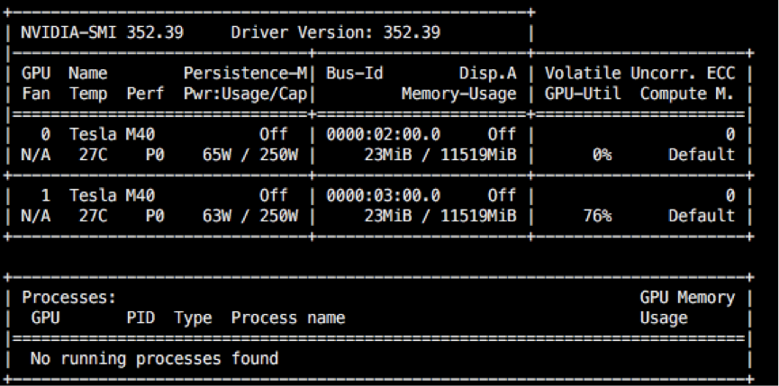

NVSMI
NVSMI提供了对每个NVIDIA Tesla设备的监控信息，本文主要分析监控信息中各个字段的含义。
在安装Tesla GPU的机器上运行nvidia-smi命令，显示如下图，nvidia-smi -q会显示更详细的信息，字段含义可参考 nvidia-smi手册：

| 字段 | 含义 | 备注 |
|---|---|---|
| Driver Version | 驱动版本号 | |
| GPU | 对应GPU编号 | |
| NAME | GPU产品名称 | |
| Persistence-M | 持久化模式是否开启 | Persistence Mode |
| Fan | 设备风扇趋于最大转速 | Fan Speed |
| Temp | 主板温度 | Temperature |
| Perf | GPU当前性能状态 | Performance State,value p0(max)~p12 |
| Pwr:Usage/Cap | 功率消耗/功率限制 | Power Draw/Power Limit |
| Bus-Id | PCI总线id | PCI Bus id |
| Disp.A | 显示活跃 | Display Active |
| Memory-Usage | frame buffer内存信息 | |
| GPU-Util | GPU | Utilization GPU |
| Compute M. | 一个或多个运行的计算应用 | Compute Mode，Default意味每个设备允许多个上下文,Exclusive Thread:每个设备一个上下文，一次可被一个线程使用,Exclusive Process:每个设备一个上下文，一次可被多个线程利用，其他等。 |